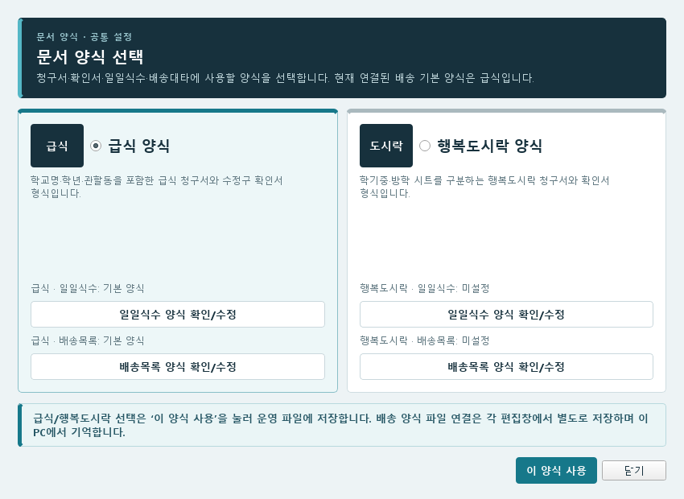
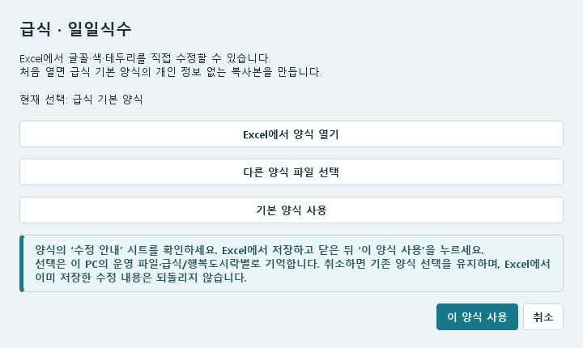
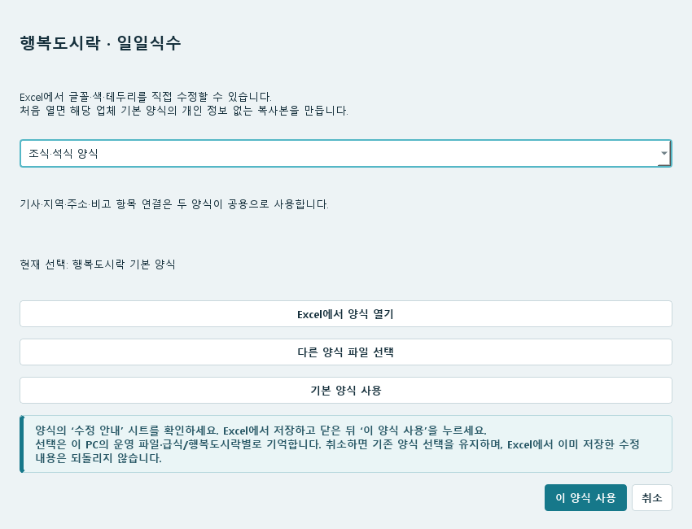

07 / 사용 방법
템플릿 변경
템플릿은 문서를 만들 때 사용하는 Excel 양식입니다. 먼저 급식·행복도시락 중 사용할 양식을 정하고, 일일식수·배송목록은 Excel에서 서식을 고쳐 연결할 수 있습니다.
급식·행복도시락 양식 선택
여는 위치 · 더보기 → 설정 → 문서 → 문서 양식
- 문서 양식을 엽니다.
- 사용할 급식 양식 또는 행복도시락 양식을 선택합니다.
- 창 아래의 이 양식 사용을 눌러 운영 파일에 저장합니다.


급식·행복도시락 선택은 운영 DB에 저장됩니다. 배송 문서에 연결한 양식 파일의 위치는 이 PC의 운영 파일·양식 종류별로 기억하므로, 다른 PC에서는 양식 파일을 복사한 뒤 다시 연결하세요.
확인서를 1식 가구부터 배치하려면 확인서: 1식짜리 먼저, 2식·3식 순으로 배치를 선택한 뒤 이 양식 사용을 누릅니다. 배치 순서 설명을 참고하세요.
마지막 주에 다음 달 토·일요일을 표시할지는 같은 창의 확인서: 다음 달로 넘어가는 토·일요일을 마지막 주 날짜에 포함에서 선택합니다. 날짜 표시와 식수 기준 설명을 확인하세요.
일일식수·배송목록을 Excel에서 수정
- 문서 양식에서 사용하는 양식 종류 아래의 일일식수 양식 확인/수정 또는 배송목록 양식 확인/수정을 누릅니다.
- Excel에서 양식 열기를 누릅니다. 해당 업체 양식을 처음 열면 개인정보가 없는 기본 양식 복사본이 만들어집니다. 이미 연결한 파일이 있으면 그 파일을 엽니다.
- 기존 예시 양식은 Excel 아래의 수정 안내 시트를 읽고, 본문 시트에서 열 너비·행 높이·글꼴·크기·글자색·채우기·테두리를 바꿉니다. 일일식수는 정렬·줄바꿈과 용지·여백·배율도 수정할 수 있습니다. 아래의 문서별 적용 범위를 확인하세요.
- Excel에서 저장한 다음 파일을 닫습니다.
- 프로그램의 양식 편집창으로 돌아와 이 양식 사용을 누릅니다.
- 문서 만들기에서 일일식수 또는 배송목록을 새로 만들어 변경한 서식을 확인합니다.


수정 전 모양을 보관하려면 파일 복사본을 만든 뒤 다른 양식 파일 선택으로 복사본을 연결해 수정하세요. 편집창에서 취소하면 이번에 바꾼 파일 선택은 저장되지 않고 기존 양식 선택을 유지하지만, Excel에서 이미 저장한 수정 내용까지 되돌리지는 않습니다.


서식을 바꿀 때 유지할 부분
플레이스홀더 배송목록은 시트 이름·셀 위치·행 구성을 자유롭게 바꿀 수 있습니다. {성명}처럼 항목을 적고 프로그램에서 연결·복사 행을 확인하세요. 글꼴·정렬·표시 형식·인쇄 설정도 그대로 반영합니다. 자유 양식 연결 방법을 확인하세요. 아래 고정 구조 제한은 일일식수와 기존 배송대타 예시 양식에 적용됩니다.
급식·행복도시락 일일식수는 내용이 잘려도 템플릿 기준으로 출력합니다. 열 너비·행 높이·글꼴·크기·색·채우기·테두리·정렬·줄바꿈과 용지·여백·배율을 Excel에서 수정하면 그대로 반영합니다. 자동으로 행을 늘리거나 글자를 줄이거나 페이지 높이를 채우지 않습니다. 식수 계산·기사별 병합·집계와 실제 출력 행 범위는 프로그램이 처리합니다.
아래 시트 이름·셀 위치·기존 병합을 유지한 채 서식을 수정하세요. Excel에서 행·열을 직접 삽입하거나 병합을 추가·해제하지 마세요. 배송목록의 새 칼럼은 프로그램에서 양식을 열 때 자동으로 추가됩니다.
| 문서 | 양식에서 유지할 구조 | 서식이 적용되는 부분 |
|---|---|---|
| 급식 일일식수 | aaa 시트의 A~I열, 1~9행. 4~9행은 셀을 병합하지 않습니다. | 1~3행은 제목, 4~8행은 기사별 본문, 9행은 합계입니다. 칸이 부족하면 여섯 번째 기사부터 마지막 본문 바로 위인 7행의 서식과 높이를 복사합니다. |
| 행복도시락 일일식수 | 첫 시트의 A1:J5, 제목과 기존 병합을 유지합니다. 중식·조식/석식 파일을 구분합니다. | 1~3행 제목, 4행 기사·지역별 본문, 5행 합계 서식입니다. 본문 높이와 테두리는 4행, 합계 높이와 서식은 5행을 따릅니다. 기사별 병합과 합계 위치는 자동입니다. 인쇄는 I열까지이며 J열에는 가구별 식수 분포가 있습니다. |
| 기존 배송대타 예시 양식 | 배송대타 시트의 1~21행, 2행 제목과 기존 병합을 유지합니다. 기존 A~H 양식도 읽으며, 확장 양식은 현재 칼럼에 맞춰 열이 늘어납니다. 숨겨진 22·23행은 수정하지 마세요. | 1행 제목, 2행 칼럼 제목, 19~21행 집계 서식을 사용합니다. 3행은 1식, 4~5행은 2식, 6~8행은 3식, 9~12행은 4식, 13~17행은 5식 가구 예시입니다. 각 예시의 행 높이·글꼴·색·테두리를 출력에 적용하며 6식 이상은 1식 서식과 높이를 반복합니다. 18행의 바깥 테두리는 BOX 가구에 적용합니다. |
기존 예시 양식의 시트 이름은 배송대타로 유지합니다. 플레이스홀더 자유 양식은 시트 이름을 바꿀 수 있습니다. 양식에 적힌 예시 이름·주소·숫자는 생성할 때 운영 자료로 채워집니다.
배송목록의 출력 항목과 순서는 문서 만들기 → 배송목록에서 체크와 드래그로 정합니다. 용지 방향과 페이지 구분도 그 화면에서 선택합니다. 일일식수의 기사 순서는 더보기 → 기사·배송 → 기사 관리 → 일일식수 기사 순서에서 식종별로 바꿉니다.
급식 일일식수는 기본 양식과 사용자가 연결한 양식 모두 지정한 서식을 사용합니다. 긴 메모가 잘리면 템플릿의 해당 열 너비·본문 행 높이·글꼴·줄바꿈을 수정한 뒤 다시 생성하세요. 합계 높이는 9행을 수정합니다. 행복도시락은 중식과 조식·석식 양식 각각에서 본문 4행·합계 5행을 수정하세요. 템플릿을 바꾼 뒤에는 새 일일식수를 만들어 결과를 확인합니다.
배송목록의 가구 색은 식수가 아니라 가구원 수를 기준으로 적용합니다.
다른 양식 파일로 변경
- 사용할 양식을 암호 없는 .xlsx 파일로 준비합니다. 위의 시트·셀 구조를 유지한 파일이어야 합니다.
- 해당 문서의 양식 확인/수정 → 다른 양식 파일 선택을 누릅니다.
- 파일을 선택하고 화면에 표시된 경로를 확인합니다.
- 이 양식 사용을 누릅니다. 상위 창을 닫아도 이 편집창에서 저장한 파일 연결은 유지됩니다.
연결한 파일은 같은 위치에 보관하세요. 파일을 옮기거나 이름을 바꾸면 다시 선택해야 합니다. Excel에서 다른 이름으로 저장했다면 새 파일을 이 방법으로 연결하세요.
청구서·확인서는 무엇을 바꿀 수 있나요?
청구서·확인서는 문서 양식에서 급식·행복도시락 형식을 선택합니다. 칼럼에 들어갈 내용은 설정 → 문서 항목 설정에서 바꿉니다.
- 문서 항목 설정을 엽니다.
- 사용 중인 양식 종류와 수정할 문서를 선택합니다.
- 왼쪽 출력 칼럼에 넣을 1순위와, 값이 없을 때 사용할 2순위를 고릅니다. 청구서는 식수·금액 같은 자동 계산 항목도 선택할 수 있습니다.
- 저장한 뒤 문서를 다시 만듭니다.
자세한 예시는 4. 생성 파일에 칼럼 연결을 참고하세요. 프로그램에 반영된 청구서 템플릿의 칼럼 이름이 바뀌었다면 이 설정창을 다시 열어 새 칼럼에 항목을 연결합니다.
기본 양식으로 돌아가기·결과 확인
- 사용하는 업체의 해당 문서 양식 확인/수정에서 기본 양식 사용을 누릅니다.
- 화면에 현재 선택: 해당 업체 기본 양식이 표시되는지 확인한 뒤 이 양식 사용을 누릅니다.
- 문서를 새로 생성해 글꼴·색·테두리와 제목·본문·합계가 원하는 대로 출력되는지 확인합니다.
행복도시락도 기본 양식 사용으로 돌아갈 수 있습니다. 일일식수는 선택 중인 중식 또는 조식·석식 양식만 초기화합니다. 식종을 바꾸기 전에 이 양식 사용으로 저장하고 창을 다시 열어 나머지 양식을 설정하세요.
배송목록에 이전 정상 양식을 사용했다는 안내가 나올 때
배송목록 양식의 구조가 잘못되거나 선택한 파일을 읽을 수 없으면, 보관된 이전 정상 저장본으로 양식을 열거나 문서를 만들고 안내합니다. 수정한 원본 파일은 그대로 둡니다. 배송목록 양식 확인/수정에서 사용할 파일과 서식을 확인한 뒤 Excel에서 저장하고 닫아 이 양식 사용을 누르세요. 이전 정상 저장본도 없다면 기본 양식 사용 또는 다른 양식 파일 선택으로 정상 양식을 연결하세요.
템플릿을 수정해도 이미 만든 Excel 문서는 바뀌지 않습니다. 새 문서를 생성한 뒤 Excel의 인쇄 미리보기에서도 글자가 잘리거나 페이지가 나뉘지 않는지 확인하세요.
| 표시되는 문제 | 확인할 내용 |
|---|---|
| 양식 파일을 찾을 수 없음 | 파일을 이동·삭제했는지 확인하고 다른 양식 파일 선택에서 현재 위치를 다시 연결합니다. |
| 시트·칼럼·행 위치 오류 | 시트 이름, 행·열 위치, 제목과 병합 상태를 위 구조와 비교합니다. 기본 복사본에서 서식만 다시 수정할 수 있습니다. |
| 수정한 모양이 나오지 않음 | 사용 중인 급식·행복도시락 종류, 문서 종류, 연결된 경로를 확인합니다. Excel 저장과 편집창의 이 양식 사용을 완료한 뒤 새 파일을 만듭니다. |